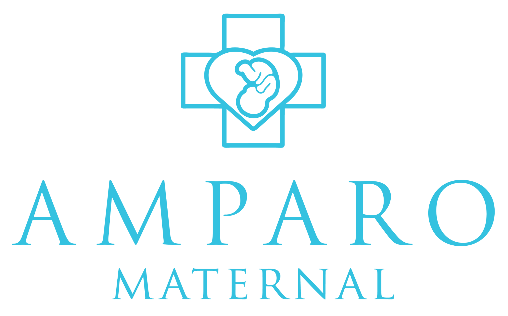

Português
Português English
English Español
EspañolMaternidade com o apoio que você merece.
Consultorias gratuitas com psicólogos e advogados, conteúdo especializado e uma comunidade que acolhe — tudo em um só sistema.
Apoiado por quem faz a diferença

+0
Mães conectadas
+0
Consultas Realizadas
+0
Cidades Alcançadas

Saúde Mental:
Consultorias
Agende sessões de escuta e acolhimento com psicólogos(as) e advogados(as)voluntárias. Um espaço seguro, 100% gratuito e confidencial para cuidar de você durante a maternidade.
AGENDAR SESSÃO.png)
Direitos da Mãe:
Orientação Jurídica
Tenha acesso a advogadas parceiras para tirar dúvidas sobre pensão alimentícia, licença-maternidade, guarda e outras questões legais, sem nenhum custo.
FALAR COM ADVOGADATudo o que você precisa em um só lugar
Conheça as ferramentas exclusivas criadas para facilitar a sua jornada na maternidade.
Teleconsulta Integrada
Sessões de escuta e orientação jurídica por vídeo, dentro de um ambiente seguro e 100% confidencial.
Fórum de Acolhimento
Comunidade moderada por especialistas para você trocar experiências e tirar dúvidas com outras mães.
Agendamento Simplificado
Escolha o profissional e o melhor horário para você em apenas dois cliques. Sem burocracia.
Pronta para ter o apoio que você merece?
Junte-se a milhares de mães e acesse agora mesmo a sua rede de acolhimento e informação.
Ambiente 100% seguro, gratuito e confidencial.